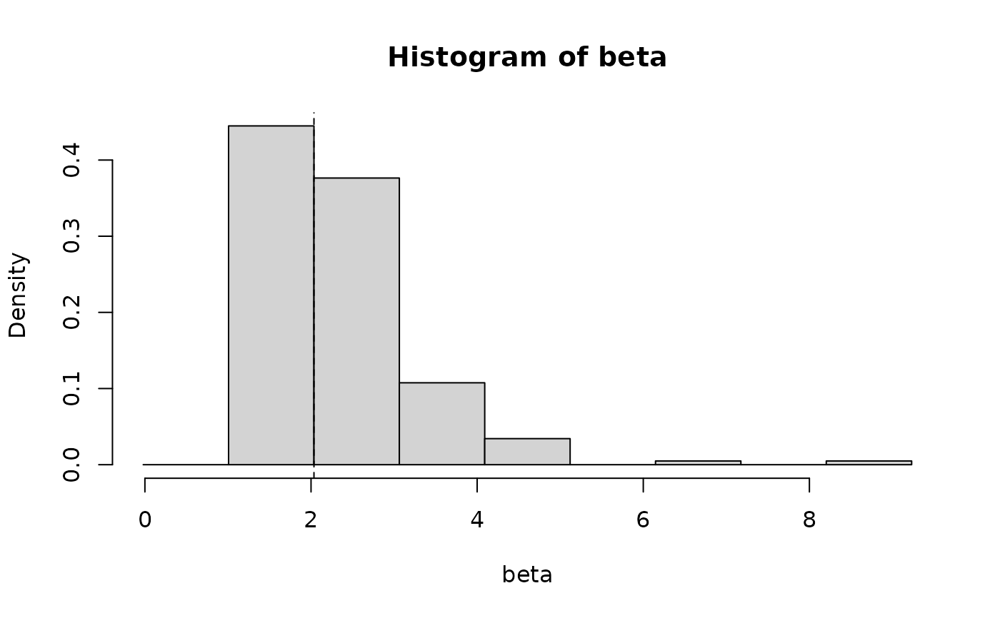

fwb() implements the fractional (random) weighted bootstrap, also known as the Bayesian bootstrap. Rather than resampling units to include in bootstrap samples, weights are drawn to be applied to a weighted estimator.
Arguments
- data
the dataset used to compute the statistic; must contain more than one unit
- statistic
a function, which, when applied to
data, returns a vector containing the statistic(s) of interest. The function should take at least two arguments; the first argument should correspond to the dataset and the second argument should correspond to a vector of weights. Any further arguments can be passed tostatisticthrough the...argument, but they cannot share a name with an argument offwb(), which would claim them instead. These requirements are checked unlessstatistichas a...argument, in which case no assumption is made about what it accepts.- R
the number of bootstrap replicates. Default is 999 but more is always better. For the percentile bootstrap confidence interval to be exact, it can be beneficial to use one less than a multiple of 100. When
wtype = "multinom"andRis at least the number of distinct bootstrap samples ofdata, it is ignored; see the description of"multinom"below.- cluster
optional; a vector containing cluster membership. If supplied, will run the cluster bootstrap. Must contain more than one cluster. See Details. Evaluated first in
dataand then in the global environment.- simple
logical; ifTRUE, weights will be generated on-the-fly in each bootstrap replication; ifFALSE, all weights will be generated at once and then supplied tostatistic. The default (NULL) sets toFALSEifwtype = "multinom"and toTRUEotherwise.- wtype
string; the type of weights to use. Allowable options include
"exp"(the default),"poisson","multinom","mammen","beta", and"power". See Details. Seeset_fwb_wtype()to set a global default.- strata
optional; a vector containing stratum membership for stratified bootstrapping. If supplied, will essentially perform a separate bootstrap within each level of
strata. This does not affect results whenwtype = "poisson".- drop0
logical; whenwtypeis"multinom"or"poisson", whether to drop units that are given weights of 0 from the dataset and weights supplied tostatisticin each iteration. IfNA, weights of 0 will be set toNAinstead. Ignored for otherwtypes because they don't produce 0 weights. Default isFALSE.- verbose
logical; whether to display a progress bar. The default value,NULL, isFALSEwhen parallelization is used (seeclbelow) andTRUEotherwise. Alternatively, the progressify package can be used to incorporate a progressr progress bar.- cl
a cluster object created by
parallel::makeCluster(), an integer to indicate the number of child-processes (integer values are ignored on Windows) for parallel evaluations, or the string"future"to use afuturebackend. See theclargument ofpbapply::pblapply()for details. IfNULL, no parallelization will take place. Alternatively, the futurize package can be used to incorporate afuturebackend. See the section "Parallel Processing" in Details.- ...
other arguments passed to
statistic.- x
an
fwbobject; the output of a call tofwb().- digits
the number of significant digits to print
- index
the index or indices of the position of the quantity of interest in
x$t0if more than one was specified infwb(). Default is to print all quantities.
Value
An <fwb> object, which also inherits from <boot>, with the following components:
- t0
The observed value of
statisticapplied todatawith uniform weights.- t
A matrix with
Rrows, each of which is a bootstrap replicate of the result of callingstatistic.- R
The value of
Ras passed tofwb(), except in the exhaustive multinomial case described under"multinom"below, where it is the number of distinct bootstrap samples.- data
The
dataas passed tofwb().- statistic
The function
statisticas passed tofwb().- call
The original call to
fwb().- cluster
The vector passed to
cluster, if any.- strata
The vector passed to
strata, if any.- wtype
The type of weights used as determined by the
wtypeargument.
The seed (when simple = FALSE) or seeds (when simple = TRUE) used to re-generate the weights is stored in the "seeds" attribute of the returned object. In the exhaustive multinomial case described under "multinom" below, no random numbers are used and the "exhaustive" attribute is TRUE.
<fwb> objects have coef() and vcov() methods, which extract the t0 component and covariance of the t components, respectively.
Details
fwb() implements the fractional weighted bootstrap and is meant to function as a drop-in for boot::boot(., stype = "f") (i.e., the usual bootstrap but with frequency weights representing the number of times each unit is drawn). In each bootstrap replication, when wtype = "exp" (the default), the weights are sampled from independent exponential distributions with rate parameter 1 and then normalized to have a mean of 1, equivalent to drawing the weights from a Dirichlet distribution. Other weights are allowed as determined by the wtype argument (see below for details). The function supplied to statistic must incorporate the weights to compute a weighted statistic. For example, if the output is a regression coefficient, the weights supplied to the w argument of statistic should be supplied to the weights argument of lm(). These weights should be used any time frequency weights would be, since they are meant to function like frequency weights (which, in the case of the traditional bootstrap, would be integers). Unfortunately, there is no way for fwb() to know whether you are using the weights correctly, so care should be taken to ensure weights are correctly incorporated into the estimator.
When fitting binomial regression models (e.g., logistic) using glm(), it may be useful to change the family to a "quasi" variety (e.g., quasibinomial()) to avoid a spurious warning about "non-integer #successes".
The cluster/block bootstrap can be requested by supplying a vector of cluster membership to cluster. Rather than generating a weight for each unit, a weight is generated for each cluster and then applied to all units in that cluster.
Bootstrapping can be performed within strata by supplying a vector of stratum membership to strata. This essentially rescales the weights within each stratum to have a mean of 1, ensuring that the sum of weights in each stratum is equal to the stratum size. For multinomial weights, using strata is equivalent to drawing samples with replacement from each stratum. Strata do not affect bootstrapping when using Poisson weights.
The bootstrap weights depend only on the state of the random number generator when fwb() is called, so calling set.seed() beforehand is all that is required to make a run reproducible. In particular, the weights do not depend on cl, on the number of workers, on verbose, or on whether statistic itself draws random numbers, and no particular RNGkind() is required. See vignette("fwb-rep") for details.
Note that simple does affect the weights: simple = FALSE draws them in a single call before statistic is applied, whereas simple = TRUE draws each replicate's weights from a random number stream reserved for that replicate. Both are reproducible, but they are not interchangeable, so you will get different results depending on whether simple is TRUE or FALSE. It's recommended to leave simple at its default value.
The print() method displays the value of the statistics, the bias (the difference between the statistic and the mean of its bootstrap distribution), and the standard error (the standard deviation of the bootstrap distribution).
Weight types
Different types of weights can be supplied to the wtype argument. A global default can be set using set_fwb_wtype(). The allowable weight types are described below.
"exp"Draws weights from an exponential distribution with rate parameter 1 using
rexp(). These weights are the usual "Bayesian bootstrap" weights described in Xu et al. (2020). They are equivalent to drawing weights from a uniform Dirichlet distribution, which is what gives these weights the interpretation of a Bayesian prior. These positive weights have a mean and variance of 1 and skewness of 2. The weights are scaled to have a mean of 1 within each stratum (or in the full sample ifstratais not supplied)."multinom"Draws integer weights using
sample(), which samples unit indices with replacement and uses the tabulation of the indices as frequency weights. This is equivalent to drawing weights from a multinomial distribution. Usingwtype = "multinom"is the same as usingboot::boot(., stype = "f")instead offwb()(i.e., the resulting estimates will be identical). Whenstratais supplied, unit indices are drawn with replacement within each stratum so that the sum of the weights in each stratum is equal to the stratum size.Unlike the other weight types, the multinomial weights have only finitely many possible values: there are \(n^n\) distinct bootstrap samples of \(n\) units (or \(\prod_s n_s^{n_s}\) with strata, and computed at the cluster level when
clusteris supplied). WhenRis at least that many,fwb()enumerates every one of them exactly once instead of sampling, setsRto that number, and reports this in a message. The resulting estimates are then the exact bootstrap distribution rather than a sample from it, and they no longer depend on the seed. This is the one respect in whichwtype = "multinom"differs fromboot::boot(., stype = "f"), which always samples; it only applies to very small samples, as \(n = 6\) already has 46656 distinct samples."poisson"Draws integer weights from a Poisson distribution with \(\lambda = 1\) using
rpois(). This is an alternative to the multinomial weights that yields similar estimates (especially as the sample size grows) but can be faster. Notestratais ignored when using"poisson"."mammen"Draws weights from a modification of the distribution described by Mammen (1983) for use in the wild bootstrap. These positive weights have a mean, variance, and skewness of 1, making them second-order accurate (in contrast to the usual exponential weights, which are only first-order accurate). The weights \(w\) are drawn such that \(P(w=(3+\sqrt{5})/2)=(\sqrt{5}-1)/2\sqrt{5}\) and \(P(w=(3-\sqrt{5})/2)=(\sqrt{5}+1)/2\sqrt{5}\) as described by Owen (2025). The weights are scaled to have a mean of 1 within each stratum (or in the full sample if
stratais not supplied)."beta"Draws weights from a \(\text{Beta}(1/2, 3/2)\) distribution using
rbeta()as described by Owen (2025). These positive weights have a mean, variance, and skewness of 1 when scaled by a factor of 4, making them second-order accurate. The weights are scaled to have a mean of 1 within each stratum (or in the full sample ifstratais not supplied)."power"Draws weights from a \(\text{Beta}(\sqrt{2} - 1, 1)\) distribution using
rbeta()as described by Owen (2025). These positive weights have a mean and variance of 1 and skewness of \(2(\sqrt{2} - 1)\) when scaled by a factor of \(2+\sqrt{2}\). The weights are scaled to have a mean of 1 within each stratum (or in the full sample ifstratais not supplied).
"exp" is the default due to it being the formulation described in Xu et al. (2020) and in the most formulations of the Bayesian bootstrap; it should be used if one wants to remain in line with these guidelines or to maintain a Bayesian flavor to the analysis, whereas other distributions might be preferred for their frequentist operating characteristics, though more research is needed on their general performance. Owen (2025) recommends "beta" and "power", as these provided close to nominal confidence interval coverage without excessively large intervals in the context of estimating the mean in a small sample. "multinom" and "poisson" should primarily be used for comparison purposes or as an alternative interface to boot.
Parallel Processing
To speed up evaluation, parallel processing can be enabled. One way to do so is to supply an argument to cl. This can be either an integer (not available on Windows), a <cluster> object created by parallel::makeCluster()
, or the string "future" (combined with setting a parallelization scheme with future::plan()
. Another general way is to use functionality in the futurize package, which is compatible with fwb. See vignette("futurize-81-fwb", package = "futurize") for details.
Parallel processing does not change the results: the same seed gives the same bootstrap replicates whatever cl is set to. See vignette("fwb-rep") for details.
When cl is a <cluster> object, fwb is attached on each worker so that the w_*() functions (e.g., w_mean(), w_std()) can be used inside statistic. Other packages needed by statistic must be attached by the user, e.g., with parallel::clusterEvalQ()
.
When parallel processing is used, a progressr progress bar via the progressify package requires a future backend (i.e., cl = "future" or the futurize() pipe); with other values of cl no progress is reported. The pbapply progress bar controlled by verbose works with all of them, but may slow down evaluation and so is not recommended. progressify progress bars work as normal with no parallelization.
References
Mammen, E. (1993). Bootstrap and Wild Bootstrap for High Dimensional Linear Models. The Annals of Statistics, 21(1). doi:10.1214/aos/1176349025
Owen, A. B. (2025). Better bootstrap t confidence intervals for the mean. arXiv. doi:10.48550/arXiv.2508.10083
Rubin, D. B. (1981). The Bayesian Bootstrap. The Annals of Statistics, 9(1), 130–134. doi:10.1214/aos/1176345338
Xu, L., Gotwalt, C., Hong, Y., King, C. B., & Meeker, W. Q. (2020). Applications of the Fractional-Random-Weight Bootstrap. The American Statistician, 74(4), 345–358. doi:10.1080/00031305.2020.1731599
See also
fwb.ci()for calculating confidence intervalssummary.fwb()for displaying output in a clean wayplot.fwb()for plotting the bootstrap distributionsvcovFWB()for estimating the covariance matrix of estimates using the FWBset_fwb_wtype()for an example of using weights other than the default exponential weightsboot::boot()for the traditional bootstrap.
See vignette("fwb-rep") for information on reproducibility.
Examples
# Performing a Weibull analysis of the Bearing Cage
# failure data as done in Xu et al. (2020)
set.seed(123)
data("bearingcage")
weibull_est <- function(data, w) {
fit <- survival::survreg(survival::Surv(hours, failure) ~ 1,
data = data, weights = w,
dist = "weibull")
c(eta = unname(exp(coef(fit))), beta = 1/fit$scale)
}
boot_est <- fwb(bearingcage, statistic = weibull_est,
R = 199, verbose = FALSE)
boot_est
#> FRACTIONAL WEIGHTED BOOTSTRAP
#>
#> Call:
#> fwb(data = bearingcage, statistic = weibull_est, R = 199, verbose = FALSE)
#>
#> Bootstrap Statistics :
#> original bias std. error
#> eta 11792.178173 7240.2183068 2.243515e+04
#> beta 2.035319 0.2665026 9.365437e-01
#Get standard errors and CIs; uses bias-corrected
#percentile CI by default
summary(boot_est, ci.type = "bc")
#> Estimate Std. Error CI 2.5 % CI 97.5 %
#> eta 1.18e+04 2.24e+04 3.35e+03 8.33e+04
#> beta 2.04e+00 9.37e-01 1.17e+00 4.17e+00
#Plot statistic distributions
plot(boot_est, index = "beta", type = "hist")
